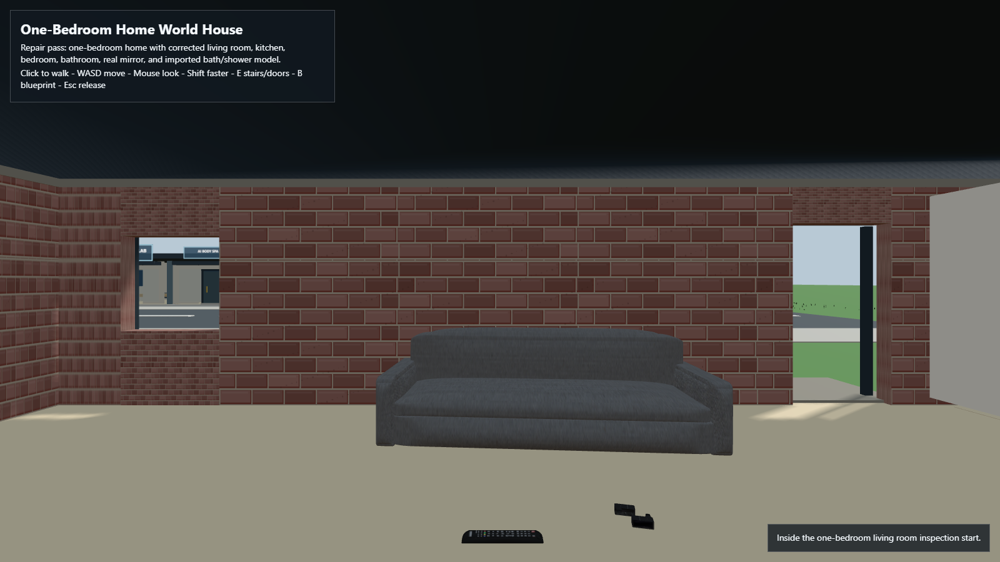

A navigable shell
A basic Home World shell has been shown; it does not prove complete rooms, residents or interactive objects.
Home / Kira World / Home World
Virtual homes / early prototype
Home World explores apartments, familiar objects and a shared place for continuing individuals. A basic local walkable shell exists, but the illustrated apartments and long-term resident behavior are future work.

Evidence by stage
These are separate engineering stages, not a single overall completion score.
A basic Home World shell has been shown; it does not prove complete rooms, residents or interactive objects.
The long-term design keeps character memories, rooms and everyday belongings appropriately distinct.
Autonomous everyday routines and a fully persistent shared environment remain unverified.
Why this area matters
A navigable prototype is different from the complete environment pictured in concept art. Objects, memory scopes and safe shared activities must each be tested.
A source review is not a verified working feature; references and illustrations remain labeled.

Original detailed project research
These sections were moved intact from the former long Kira World homepage. Findings, photographs, safeguards and unfinished tests retain their original descriptions and source boundaries.
How to read this work
Working software, active engineering and future direction are different things. Every layer keeps its own status.

Person-specific profiles, reviewed memory, bounded restart experiments and local voice work provide a continuing foundation.
A basic walkable Home World shell also exists. These are prototypes, not a finished shared life.

Requirements, evidence records, articulated test-body fixtures and garment behavior are being defined and tested.
There is not yet a finished Kira body or production clothing simulation.

Residents, digital homes, Notebook Worlds, accessible VR and compatible embodiment without losing identity.
These are directions for research, not release dates or supported-hardware promises.
Evidence / actual development
The walkable shell proves a basic navigable environment. It does not prove polished rooms, persistent residents or finished object behavior.

Current evidence · October 3, 2026
The local conversation baseline remains Ollama Qwen3.5:9b. The documented portable offline lane records 162 passes and 3 expected skips using a deterministic stub; this checks installation, storage, identity isolation and interfaces, not conversation quality.
Avatar Builder’s newest source proposes an inactive generic carrier build/save/cold-reload/deformation trial. Its 8 new fixtures and inherited 18 integration plus 22 compiler fixtures remain unrun. No Blender build, save/reload, deformation trial or NewBrain sensory input occurred in this update. Finished anatomy, physiology and autonomous body construction remain unproved.
Read the original research
Detailed results remain available on their original Kira Labs pages. Private source media, user histories and uncensored anatomical images are not published here.